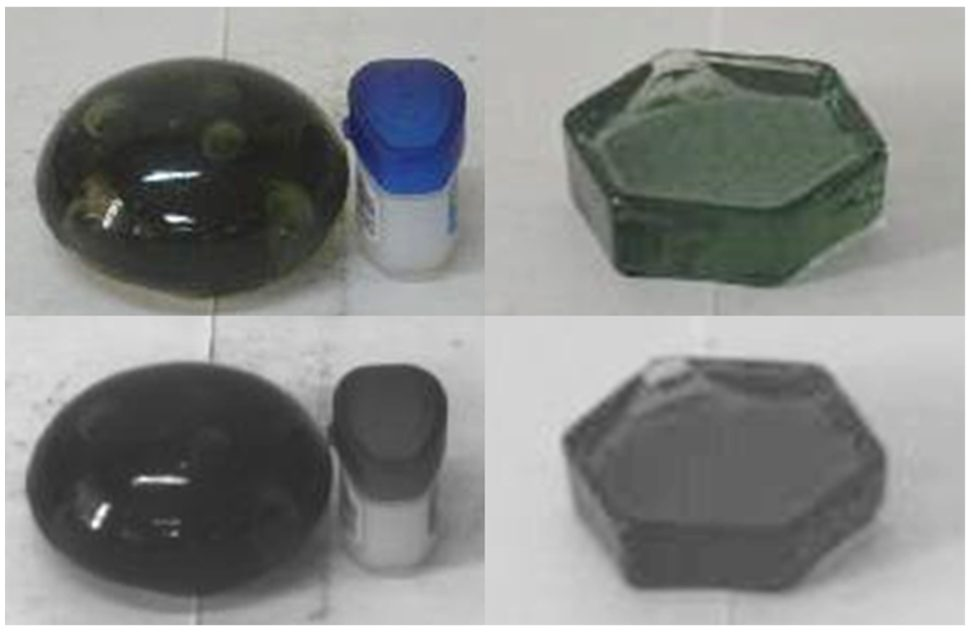
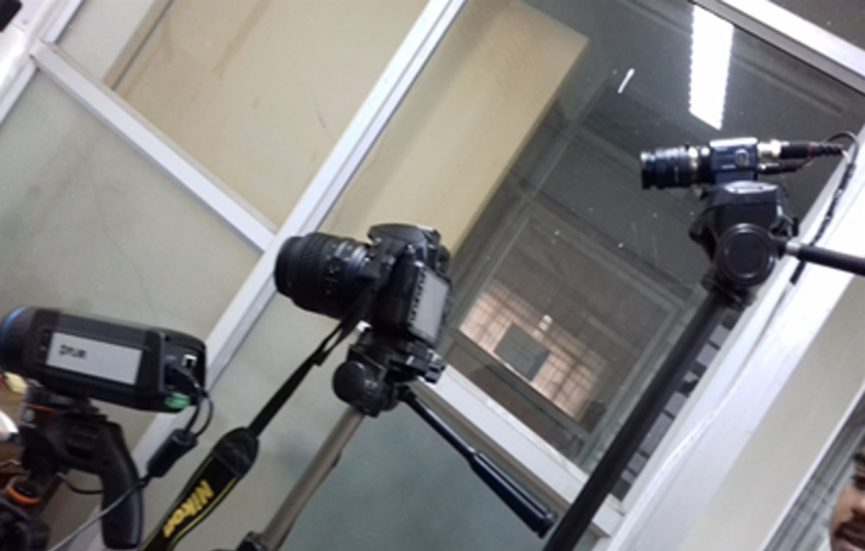
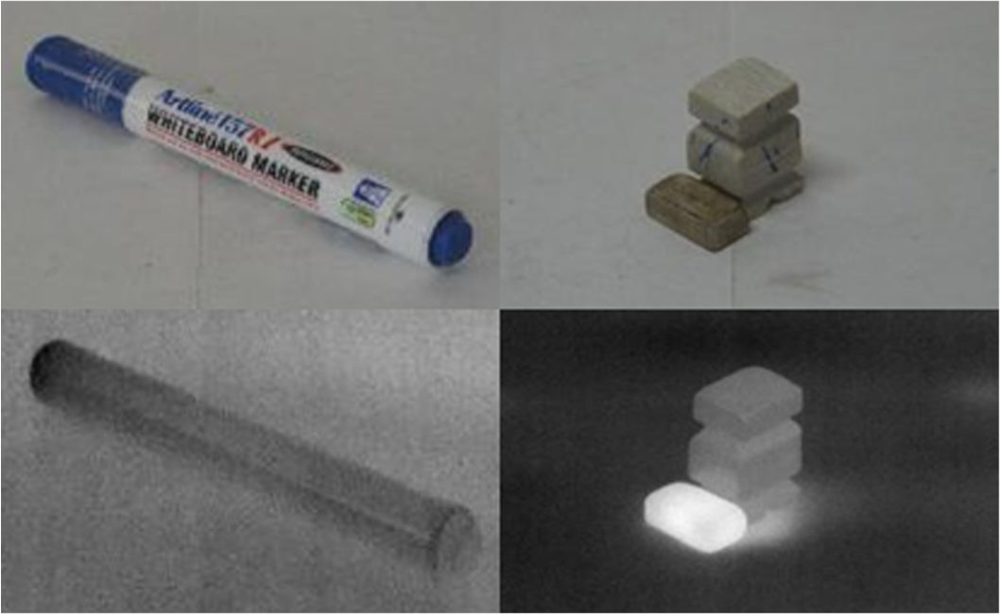

A photo collection of desk objects in visible, near-infrared and thermal light
An ordinary camera sees what our eyes see, and that is not always enough. In fog or poor light it struggles, and it misses properties of an object that other kinds of light reveal. We built JU-VNT, a collection of 7,800 photographs of everyday desk objects taken in three kinds of light: visible, near-infrared and thermal. We labelled the images, lined them up with each other, and tested standard neural networks on them.
Why three kinds of light
Each spectrum shows something different. Visible light gives colour, texture and shape. Near-infrared (NIR) light lies just beyond the red end of the visible range. NIR cameras have been found to work in fog where ordinary cameras cannot, and an infrared lamp can light a scene at night. It also copes better than visible light with glass, which bends and reflects light. Thermal cameras record heat, so they do not depend on the light source at all, although they are expensive and can struggle in warm surroundings.

Datasets that pair two spectra exist, for example visible with thermal for street scenes (Table 1). The paper states that there are none on these three spectra together. Having three cameras also brings practical complications, such as different lenses, viewpoints, sharpness and noise, which the dataset also carries.
How the photos were taken
We used a Nikon D3200 for visible light, a Watec WAT-902H2 camera with a filter that blocks everything below 830 nm for NIR, and a FLIR A655SC for thermal. The three cameras stood on tripods of different heights so that none blocked another, looking at a table covered in white paper, with an infrared lamp on the ceiling above it.

There are 25 objects, made of wood, plastic, glass, ceramic, metal and other materials. They include a stapler, scissors, a key, a cup, a pair of spectacles and a power bank (Table 2). We rotated each object in 45 degree steps to get 8 views. That gives 600 images of single objects. We did the same for every pair of the 25 objects, which gives 7,200 more.
The three cameras do not see the table from the same spot, so their images do not line up. Before each set we took one extra shot with three vertical metal markers around the objects. The marker tips gave us three matching points. From those, an affine transformation (a mix of rotation, scaling and skewing) maps the NIR and thermal images onto the visible one, and we then tidied the result by hand. All three images are cropped with one window, found from the NIR image. We also give the objects' bounding boxes, in XML, and sort the images into folders by class.

What the benchmarks show
We trained four standard networks, ResNet18, Inception-V3, DenseNet-121 and MobileNetV2, on a random 3:1 train and test split. We tried each spectrum alone and every combination, with and without random flips of the images as data augmentation.
Single objects were the easier task. Several networks reached 98 to 100% on RGB or NIR alone (Table 3). Pairs were harder. Thermal alone did poorly: averaged over the four networks it reached 65.41% without augmentation, against 93.85% for RGB (Table 4). The paper explains that when two objects have similar temperatures, the network sees one blob.
The paper reads the results as a challenge. Its benchmarks show that standard networks are not suited to handling more than two spectra, and it offers JU-VNT as a testbed for that problem. The best score on pairs was 99.00%, from MobileNetV2 on RGB plus NIR with augmentation (Table 4).

Results in more detail
Table 3 of the paper holds the single-object results. Each row is one choice of input, either one spectrum or several joined together, so "rgb nir" means visible plus near-infrared. Each column is one network, and every value is the percentage of test images classified correctly. The table below shows the runs without data augmentation, plus the row means for the runs with augmentation in the last column. The last row averages over the rows. Data augmentation here means randomly flipping the training images to give the network more variety of views. The data were split at random, three parts for training and one for testing. The RGB images went in as three channels, and the NIR and thermal images, being grey-scale, went in as one.
| Spectrum | ResNet18 | Inception-V3 | DenseNet 121 | MobileNetV2 | Mean | Mean with augmentation |
|---|---|---|---|---|---|---|
| rgb | 72.00 | 98.00 | 96.00 | 76.00 | 85.50 | 91.00 |
| nir | 78.00 | 96.00 | 100.00 | 96.00 | 92.50 | 93.00 |
| thermal | 92.00 | 92.00 | 92.00 | 89.00 | 91.25 | 91.50 |
| rgb nir | 98.00 | 98.00 | 98.00 | 96.00 | 97.50 | 97.75 |
| nir thermal | 92.00 | 100.00 | 98.00 | 96.00 | 96.50 | 93.50 |
| rgb thermal | 94.00 | 100.00 | 98.00 | 97.00 | 97.25 | 94.00 |
| rgb nir thermal | 90.00 | 98.00 | 98.00 | 99.00 | 96.25 | 97.50 |
| Mean | 88.00 | 97.43 | 97.14 | 92.71 | - | - |
With single objects, no one input won everywhere. Without augmentation, ResNet18, Inception-V3 and MobileNetV2 did better on the combined spectra than on any single one, while DenseNet-121 did best on NIR alone. With augmentation, Inception-V3 reached 100.00 on both RGB and NIR (Table 3). Augmentation helped MobileNetV2 a great deal, for example from 76.00 to 98.00 on RGB. It worked against some networks on the combinations with thermal: ResNet18 on NIR plus thermal went from 92.00 to 82.00 (Table 3). The paper's reason is that thermal adds little for general learning when there is only one object in the picture, so whenever RGB or NIR is left out, augmentation hurts.
Table 4 has the same layout for pairs of objects, which is the harder task. Here are the runs without augmentation.
| Spectrum | ResNet18 | Inception-V3 | DenseNet 121 | MobileNetV2 | Mean |
|---|---|---|---|---|---|
| rgb | 90.58 | 92.67 | 95.67 | 96.48 | 93.85 |
| nir | 83.08 | 77.75 | 90.33 | 94.42 | 86.40 |
| thermal | 59.92 | 51.50 | 62.25 | 87.99 | 65.41 |
| rgb nir | 89.58 | 91.50 | 97.25 | 97.80 | 94.03 |
| nir thermal | 81.75 | 81.92 | 86.92 | 90.64 | 85.31 |
| rgb thermal | 87.83 | 92.75 | 96.17 | 95.74 | 93.12 |
| rgb nir thermal | 92.75 | 87.50 | 95.83 | 95.83 | 92.98 |
| Mean | 83.64 | 82.23 | 89.20 | 94.13 | - |
Thermal alone is the lowest row for every network, and Inception-V3 has the lowest mean of the four networks. MobileNetV2 has the highest mean and held up best on thermal images, with 87.99. These are the runs with augmentation.
| Spectrum | ResNet18 | Inception-V3 | DenseNet 121 | MobileNetV2 | Mean |
|---|---|---|---|---|---|
| rgb | 93.42 | 94.67 | 98.17 | 95.32 | 95.39 |
| nir | 82.58 | 75.91 | 92.25 | 94.51 | 86.31 |
| thermal | 64.33 | 52.92 | 71.33 | 92.53 | 70.28 |
| rgb nir | 96.17 | 96.83 | 98.08 | 99.00 | 97.52 |
| nir thermal | 81.92 | 79.92 | 91.08 | 93.94 | 86.71 |
| rgb thermal | 93.42 | 89.08 | 97.92 | 95.04 | 93.86 |
| rgb nir thermal | 97.08 | 91.17 | 97.92 | 96.27 | 95.61 |
| Mean | 86.99 | 82.93 | 92.39 | 95.23 | - |
With augmentation the mean of every network went up. For example, DenseNet-121 went from 89.20 to 92.39 and MobileNetV2 from 94.13 to 95.23 (Table 4). The paper says that augmentation was more effective on pairs than on single objects. The combinations with thermal scored below RGB with NIR for most networks. The paper puts it this way: when two objects have similar thermal intensity the network sees them as a whole, while NIR helps to tell different materials apart, which helps when there are several objects.
Discussion
We built JU-VNT as a testbed, and the benchmarks give it a job. Most earlier multispectral datasets use two spectra, such as RGB with NIR or RGB with thermal. Our results show how hard it is to use three. The standard networks we tried are not suited to handling more than two spectra, so we see the combination of all three as a challenge that readers can take up.
The pattern in the results has a simple cause in our view. Thermal images record temperature, so printing on an object disappears and, as the paper notes, different objects with a similar colour can show different intensities. That is useful when objects differ in how they hold heat, and a handicap when two neighbouring objects are about equally warm. NIR copes better with glass, and it helps the network tell materials apart. RGB with NIR therefore worked well for most networks.
The limits are stated in the paper. The registration is approximate. An affine transformation can rotate, scale and skew an image but not shift it, so we refined each result by hand, and the cameras see the table from slightly different angles, which makes a pixel-exact match technically impossible. The objects are ordinary desk items photographed indoors on white paper.
We see the collection as a starting point. Besides classifying one or several objects and locating them, the paper suggests translating images from one spectrum to another and generating images that simulate an object's rotation. The paper calls JU-VNT one of the largest multispectral datasets of its time, with 7,800 images, and the dataset is on GitHub.
Sources
The figures and tables listed here are taken from the paper cited at the top of this page; the numbers quoted in the text come from the paper too.
- Figures: Fig. 5, Fig. 1, Fig. 6, Fig. 8
- Tables: Table 1: earlier multispectral datasets; Table 2: the 25 object classes and their materials; Table 3: single-object accuracy of each network and spectrum combination; Table 4: object-pair accuracy of each network and spectrum combination
Acknowledgements
This work is supported by the project sponsored by SERB (Government of India, order no. SB/S3/EECE/054/2016, dated 25/11/2016), and was carried out at the Centre for Microprocessor Application for Training Education and Research, CSE Department, Jadavpur University. The authors thank the team that made the collection of the dataset possible. Image capturing: Subham Jana and Puspendu Khan. Data preprocessing: Tathagata Bandyopadhyay, Anwesha Sen and Soupik Chowdhury. Data annotation: Osman Goni, Priyam Sarkar, Rounak Dutta, Supriyo Das, Debarati Roy and Ujjwal Misra. Benchmarks: Somenath Kuiry and Bodhisatwa Mondal. Special thanks to Somenath Kuiry for his contribution during revision.
Cite the paper
Swarnendu Ghosh, N Das, P Sarkar, M Nasipuri (2021). JU-VNT: a multi-spectral dataset of indoor object recognition using visible, near-infrared and thermal spectrum. Multimedia Tools and Applications, Vol. 80, No. 12, pp. 17807–17826 · Springer.
@article{ghosh2021ju,
author = {Ghosh, Swarnendu and Das, N and Sarkar, P and Nasipuri, M},
title = {{JU-VNT:} a multi-spectral dataset of indoor object recognition using visible, near-infrared and thermal spectrum},
journal = {Multimedia Tools and Applications},
volume = {80},
pages = {17807--17826},
publisher = {Springer},
year = {2021},
doi = {10.1007/s11042-020-10302-z}
}